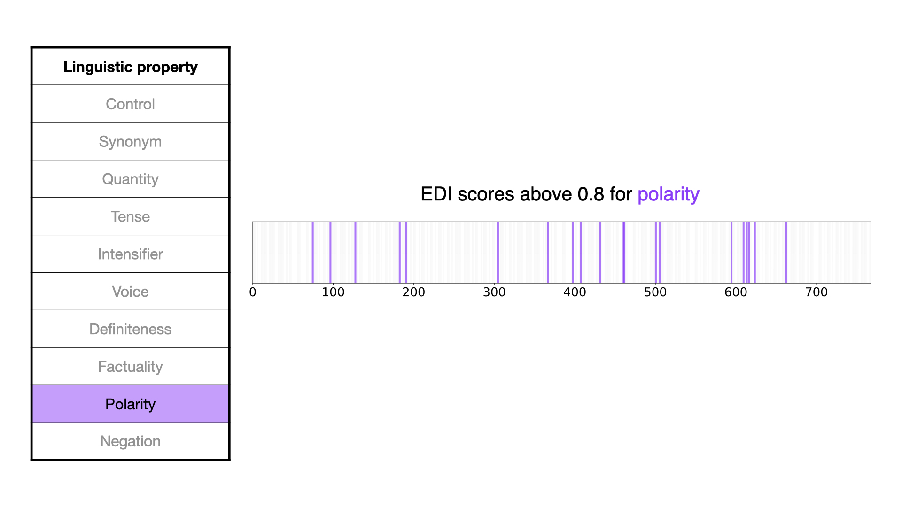

| A Grand Unified Theory of Deep Learning | |||
|
Your name
Your email |
Your partner's name
Your partner's email |
||
| Final project for 6.7960, MIT | |||
Data
The Linguistically Distinct Sentence Pairs (LDSP) dataset forms the foundation for our study, providing a diverse set of linguistic transformations critical for understanding how embeddings encode semantic and syntactic relationships. The LDSP dataset, introduced in prior work ([13]), contains sentence pairs that differ along specific linguistic properties shown in Table 1. These transformations are designed to isolate and test the embedding dimensions most responsive to each property.
To evaluate the responsiveness of embedding dimensions to these linguistic properties, we utilized the Embedding Dimension Impact (EDI) metric ([13]), a measure that quantifies the importance of each embedding dimension for encoding a specific linguistic transformation. The EDI score is computed as:
\[ \text{EDI}_{d,lp} = w_1 \cdot T_{d,lp} + w_2 \cdot MI_{d,lp} + w_3 \cdot R_{d,lp}, \]
where:
- \( T_{d,lp} \): The negative log of the p-value from the statistical pairwise t-test, which determines whether there is a significant difference between the embedding values for Sentence 1 and Sentence 2 in each LDSP.
- \( MI_{d,lp} \): The mutual information score, quantifying the amount of information shared between the embedding dimension and the linguistic property.
- \( R_{d,lp} \): The absolute value of the logistic regression weight for the dimension after recursive feature elimination (RFE). If the dimension is removed during RFE, \( R_{d,lp} = 0 \).
The weights \( w_1, w_2, w_3 \) were optimized in prior work to balance the contributions of each component, ensuring that the EDI metric reliably captures the significance of each dimension for linguistic transformations.
Dataset overview
The LDSP dataset includes 1000 sentence pairs for each of the 10 linguistic properties we investigate.
The dataset was generated using Google's gemini-1.5-flash model API.
Linguistic properties
The linguistic properties tested were chosen to explore various semantic and syntactic relationships. Below is a summary of each property from the LDSP dataset:
| Linguistic property | Description |
|---|---|
| Control | Contains completely unrelated sentence pairs for comparison. |
| Synonym | Both sentences have the same meaning, with one word replaced by its synonym. |
| Quantity | Switch from an exact number to a grouping word. |
| Tense | One sentence is constructed in the present tense, while the other is in the past tense. |
| Intensifier | Degree of emphasis present within a sentence. |
| Definiteness | Use of definite or indefinite articles within a sentence, such as "the" compared to "a". |
| Factuality | The degree of truth implied by the structure of the sentence. |
| Polarity | Similar to negation but occurs when an antonym is used to reverse the meaning of the sentence completely. |
| Negation | Addition of "not" to a sentence, negating the meaning. |
Table 1. Linguistic property descriptions.
These linguistic properties were selected to provide a comprehensive view of both semantic and syntactic relationships in embedding spaces. Additionally, the inclusion of the control category ensures that results are contextualized against unrelated sentences, offering a baseline for comparison. Our interactive graphic in Figure 2 shows examples of Sentence 1 and Sentence 2 according to their linguistic relationship.


Figure 2. Linguistic property examples.


Figure 3. Dimensions with high EDI scores.